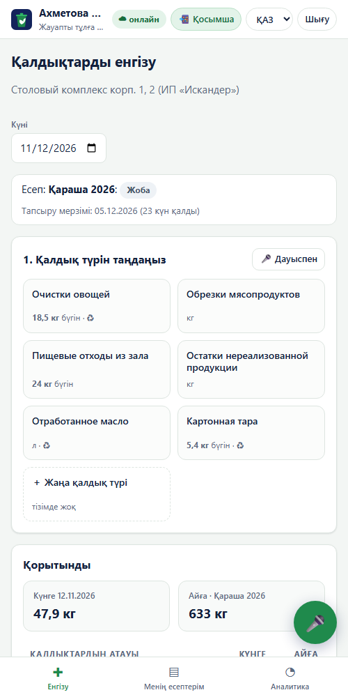
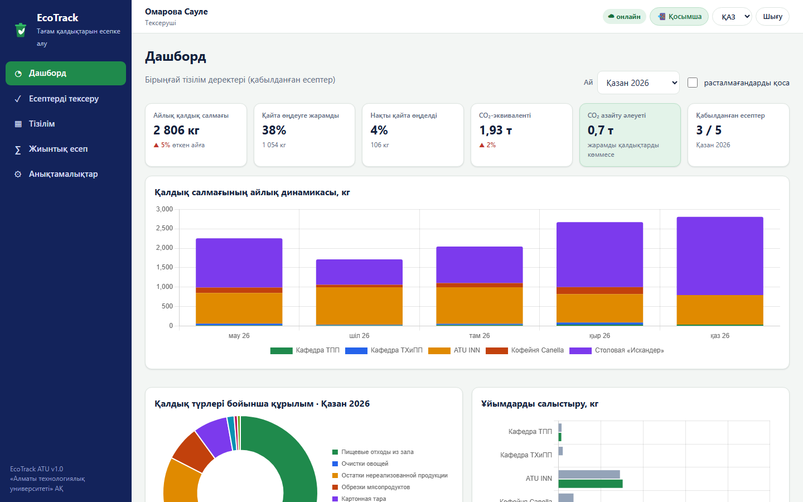
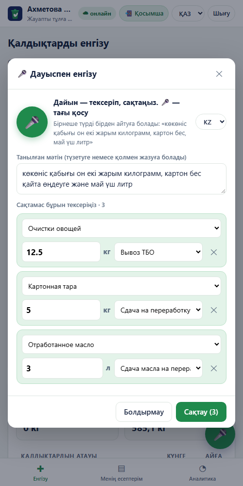
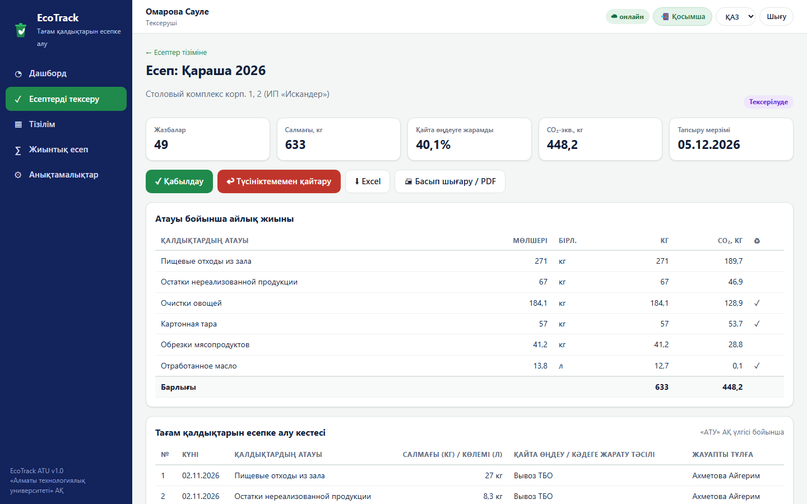
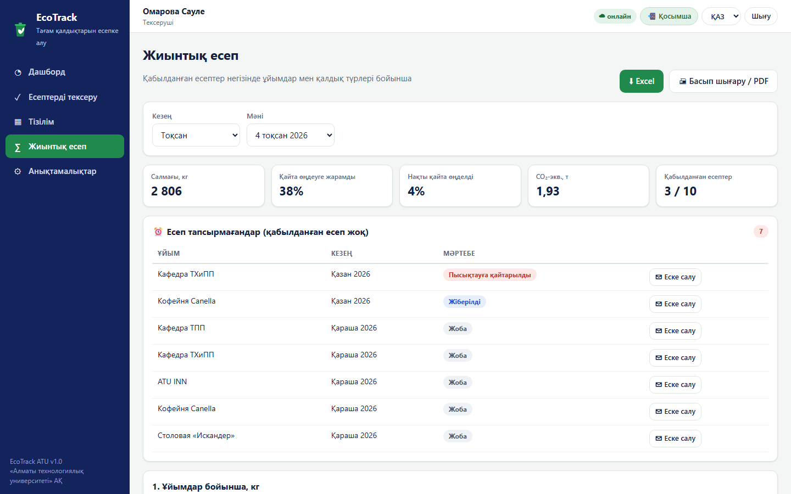
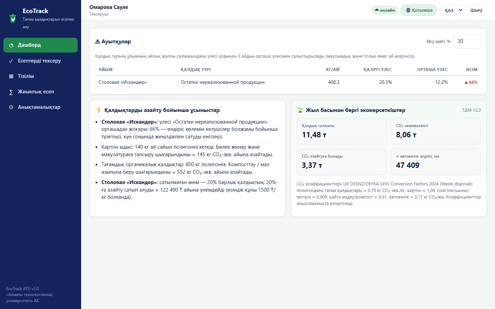

Университет кешенінің тағам қалдықтарын басқарудың цифрлық жүйесі
АТУ-дың 5 ұйымы бір үлгідегі есеп кестелерін жүргізеді, бірақ ортақ базасыз, тексерусіз және аналитикасыз
әлемдік азық-түліктің жоғалады немесе тасталады
жаһандық парниктік газ шығарындылары тағам шығындарымен байланысты
Қазақстандағы қатты тұрмыстық қалдықтардың — тағамдық және органикалық
айына АТУ-да қолмен есепке алуға, көшіруге және 5 кестені біріктіруге кетеді
Қайта өңдеу есебі және ESG мен ТДМ 12.3 үшін деректер жоқ. Барлығы дерлік полигонға кетеді, ал ≈43%-ы қайта өңдеуге жарамды.
Артық сатып алу: «сатылмаған өнім қалдықтары» басшылыққа уақытында көрінбейді.
Қолмен біріктіру, қателер мен олқылықтар, мерзім мен есеп тапсырмағандарды бақылау жоқ.
Қымбат «ақылды ас үй» емес, АТУ стандартындағы құжат айналымы бар қарапайым есеп керек
| Шешім | Не істей алады | АТУ үшін шектеулері |
|---|---|---|
| Winnow, Orbisk (Ұлыбритания, Нидерланды) | Бактың үстіндегі ЖИ-камера, қалдықты тану | Қымбат жабдық пен валютадағы жазылым; тек ас үй; ұйымдардың есеп тапсыруы жоқ |
| Leanpath (АҚШ) | Таразы мен планшет, шығын аналитикасы | Қазақ және орыс тілі жоқ; АТУ нысандары мен есепті тексеру жоқ; ҚР-да қолжетімсіз |
| Excel / Google Forms | Тегін, үйреншікті | Рөлдер, мәртебелер, бұғаттау, тарих және тапсырмағандарды бақылау жоқ; қолмен біріктіру |
| Қағаз журнал (қазір) | Ештеңе баптаудың қажеті жоқ | Аналитика мен CO₂ жоқ; көшіргенде қате; айлар бойы кешігу |
| EcoTrack ATU | АТУ үлгісіндегі нысандар, workflow, тізілім, жиынтық, дашборд, CO₂ | Кез келген смартфонда қосымша ретінде; ҚАЗ/РУС/ENG; дауыспен енгізу; тегін хостинг; таразымен байланысқа дайын (Трек 2) |


PWA (HTML/CSS/JS, офлайн) + Supabase бұлты (PostgreSQL): смартфон мен ноутбук ~4 с ішінде синхрондалады. Chart.js, SheetJS, QR, дауыспен енгізу
Рөлдер API қабатында тексеріледі, құпиясөздер тұзды SHA-256 хэші түрінде сақталады; пилотқа рөлдер бойынша RLS схемасы дайын
7 нысан (ER репозиторийде), ≈2 300 демо-жазба, 5 ұйым, маусым–қараша

Аспаз: дауыспен немесе 3 басумен. Күн мен ай жиыны, мәртебе және тексерушінің түсініктемесі

Тексеруші: АТУ үлгісіндегі есеп, салмақ, CO₂, «қабылдау / қайтару», тарих

Жиынтық: тоқсан Excel-де, тапсырмағандар тізімі
Басшылық: салмақ, қайта өңдеу үлесі, CO₂, динамика, ұйымдарды салыстыру

Аналитика: +N % ауытқулар, ұсыныстар және ₸-дағы үнем
5 ұйым, айына ≈440 өлшеу
| Айына сағат | Жазу | Көшіру | Біріктіру және тексеру | Есептер | Барлығы |
|---|---|---|---|---|---|
| Қазір | 11 | 10 | 12 | 3 | 36 |
| Жүйемен | 3,7 | 0 | 1,3 | 0,2 | 5,2 |
кампус — АТУ пилоты, 2026–2027
ЖОО 2 жылда, ҚТКО және ЖОО желісі арқылы
15 жазылымдағы жылдық түсім
| Жылдық әсер | ₸ |
|---|---|
| Еңбек үнемі: 370 сағ × 2 500 ₸/сағ | 920 000 |
| Шикізат: сатылмаған өнім −20 % (айына 60 кг × 1 500 ₸) | 1 080 000 |
| OPEX: дерекқор хостингі + 0,1 ставка сүйемелдеу | −516 000 |
| Таза әсер | ≈1 500 000 |
| CAPEX (бір реттік) | ₸ |
|---|---|
| Бұлттық дерекқор, анықтамалықтарды көшіру | 150 000 |
| Ас үйлерге 2 планшет (міндетті емес) | 240 000 |
| QR-кодтар, 10 қызметкерді оқыту | 60 000 |
| Барлығы CAPEX | 450 000 |
Өтелуі: 450 мың ₸ ÷ жылына 1,5 млн ₸ ≈ 3,6 ай.
MVP (код) дайын, хостингі тегін.
Команданың болжамдары: салықпен сағатына 2 500 ₸; өзіндік құны 1 500 ₸/кг; сатылмаған өнім көлемі АТУ кестелерінің үлгісімен құрылған демо-деректер бойынша бағаланды. Пилотта нақтылау керек.
жылына тағам қалдықтары (5 ұйым)
қайта өңдеуге жарамды, ал қазір ≈3%-ы өңделеді
қазір жылына CO₂-экв.
км автокөлік жүрісі — азайтудың баламасы
UK DESNZ/DEFRA GHG Conversion Factors 2024 (Waste disposal) коэффициенттері: полигондағы тағам ≈0,70 кг CO₂-экв./кг, картон ≈1,04, қайта өңдеу немесе компост ≈0,01. Коэффициенттер анықтамалықта өзгертіледі.
Толық цикл, 5 ұйым, демо-деректер
«Искандер» асханасы: бұлттық дерекқор, ас үйде QR, оқыту
5 ұйым, буфеттер, зертханалар; Telegram-еске салу; Excel импорты
Электрондық таразыға API (Трек 2), қалдықты фото арқылы тану
SaaS және көп жалдаушылық, ҚТКО арқылы сату
Пилотта 1 әзірлеуші, АТУ-дан жауапты тексеруші, сүйемелдеуге 0,1 ставка
Қызметкерлердің қарсылығы; толық емес деректер; ас үйде интернеттің болмауы
3 басу және дауыспен енгізу; тапсырмағандар мен мерзімді бақылау; PWA офлайн режимі